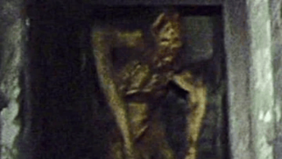

The 1990s shifted horror away from traditional slashers, embracing self-awareness, psychological depth, and supernatural elements. Found footage emerged, and gothic horror explored deeper themes.
A psychological horror-thriller featuring Hannibal Lecter, a brilliant yet terrifying cannibal psychiatrist, and FBI agent Clarice Starling. The film won five Academy Awards, an exceptional feat for horror.
A gothic horror film that delves into immortality, loneliness, and morality through the complex relationship between vampires Lestat and Louis. Their existential struggles and shifting dynamic add depth to this visually rich and melancholic tale of eternal life.
Wes Craven revitalized the slasher genre with this self-aware horror film, where characters recognized and subverted classic horror tropes while being hunted by the cunning and brutal Ghostface, blending satire, suspense, and genuine scares.
A found-footage horror phenomenon that followed three filmmakers lost in the woods, using shaky camerawork, improvisation, and psychological tension to create an unsettling sense of realism, leaving much of the terror to the audience’s imagination.
| Nombre | ID | Carrera | Correo |
|---|---|---|---|
| Maria Jose Arévalo | 1094044725 | Jurisprudencia | mariaj.arevalo@urosario.edu.co |
| Daniela Cortes Rodriguez | 1095550727 | Jurisprudencia | daniela.cortesro@urosario.edu.co |